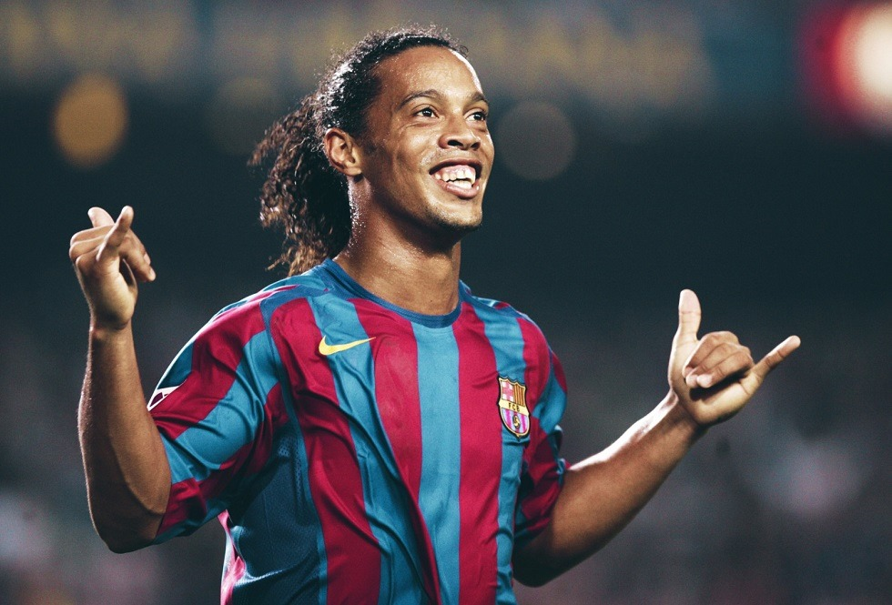

Ποδόσφαιρο
Το ποδόσφαιρο είναι ομαδικό άθλημα που παίζεται ανάμεσα σε δύο ομάδες των έντεκα παικτών με μία σφαιρική μπάλα. Ο ποδοσφαιρικός αγώνας διεξάγεται σε ένα ορθογώνιο γήπεδο με φυσικό ή τεχνητo χλοοτάπητα πράσινου χρώματος και ένα μεταλλικό πλαίσιο στο μέσο κάθε μιας από τις στενές πλευρές, το «τέρμα». Σκοπός κάθε ομάδας είναι να οδηγήσει τη μπάλα στο αντίπαλο τέρμα, δηλαδή «να βάλει γκολ» (από την αγγλική λέξη goal που σημαίνει σκοπός) ή «να σκοράρει», όπως λέγεται στην ειδική ποδοσφαιρική γλώσσα. Οι παίκτες χειρίζονται τη μπάλα κυρίως με τα πόδια, αλλά και με τον κορμό ή το κεφάλι. Η ομάδα που θα επιτύχει τα περισσότερα γκολ ως το τέλος του παιχνιδιού κερδίζει ενώ αν καμία ομάδα δεν σκοράρει ή και οι δύο ομάδες καταλήξουν στο τέλος του παιχνιδιού με την ίδια βαθμολογία σε σκορ τότε το παιχνίδι λήγει ισόπαλο.
Το ποδόσφαιρο είναι σήμερα το πιο δημοφιλές άθλημα στον κόσμο με τις περισσότερες ενεργές διοργανώσεις παγκοσμίως. Στις αρχές του 21ου αιώνα ασχολούνταν με αυτό περισσότεροι από 250 εκατομμύρια αθλητές σε περισσότερα από 200 κράτη. Το ποδοσφαιρικό παιχνίδι παίζεται σε διάφορα επίπεδα, από φιλικό, με λιγότερους ή περισσότερους από έντεκα παίκτες, παιδιά ή ενήλικες, σε ένα οποιουδήποτε μεγέθους γήπεδο, με δύο τυχαία αντικείμενα για τη σήμανση του τέρματος, έως επαγγελματικό, με επαγγελματίες ποδοσφαιριστές, αυστηρή τήρηση των κανονισμών και περισσότερους από 100.000 ενθουσιώδεις θεατές να παρακολουθούν σε ειδική ποδοσφαιρική αρένα υψηλών τεχνικών προδιαγραφών. Ανώτατη οργανωτική αρχή του ποδοσφαίρου είναι η FIFA (FIFA - Fédération Internationale de Football Association), η οποία διεξάγει την κορυφαία ποδοσφαιρική διοργάνωση, το Παγκόσμιο Κύπελλο Ποδοσφαίρου, κάθε τέσσερα(4) χρόνια.
To Ευρωπαϊκό Πρωτάθλημα Ποδοσφαίρου (αγγλικά: UEFA European Championship), γνωστό ως Euro, είναι η ευρωπαϊκή ποδοσφαιρική διοργάνωση,
στην οποία διαγωνίζονται οι εθνικές ομάδες ανδρών των μελών της UEFA προκειμένου να καθοριστεί ο πρωταθλητής της Ευρώπης.
Διεξάγεται κάθε τέσσερα χρόνια από το 1960, στις μονές χρονιές μεταξύ των Παγκοσμίων Κυπέλλων Ποδοσφαίρου, και στην αρχή ονομαζόταν
UEFA European Nations' Cup προτού αλλάξει στο σημερινό του όνομα το 1968. Ξεκινώντας από το πρωτάθλημα του 1996, ορισμένα πρωταθλήματα
αναφέρονται συχνά με την μορφή "UEFA Euro [χρονιά]" ; αυτή η μορφή έχει από τότε εφαρμοστεί και στα προηγούμενα πρωταθλήματα.
Πριν να εισέλθουν στην διοργάνωση, όλες οι ομάδες εκτός από το έθνος που φιλοξενεί κάθε φορά το Ευρωπαϊκό Πρωτάθλημα
(το οποίο προκρίνεται αυτόματα) διαγωνίζονται στην προκριματική διαδικασία. Οι νικητές του πρωταθλήματος αποκτούν την δυνατότητα
να διαγωνιστούν στο επόμενο Κύπελο Συνομοσπονδιών της FIFA αλλά δεν είναι υποχρεωμένοι να το κάνουν.
Το Κόπα Αμέρικα (Κύπελλο Εθνών της Νοτίου Αμερικής), το αντίστοιχο του Ευρωπαϊκού Κυπέλλου (Euro), είναι η παλαιότερη διεθνής ποδοσφαιρική
διοργάνωση του κόσμου. Τις περισσότερες κατακτήσεις του θεσμού έχει η Ουρουγουάη με 15. Η πρώτη διοργάνωση έγινε από τις 2 έως τις 17 Ιουλίου 1916
στο Μπουένος Άιρες, με αφορμή τα εκατό χρόνια από την ανεξαρτησία της Αργεντινής.
Πήραν μέρος τέσσερις ομάδες (Βραζιλία, Αργεντινή, Χιλή, Ουρουγουάη) και τον τίτλο κατέκτησε η Ουρουγουάη.
Στις 9 Ιουλίου 1916 ιδρύθηκε η Ποδοσφαιρική Συνομοσπονδία της Νοτίου Αμερικής (CONMEBOL), η οποία έθεσε αμέσως υπό την αιγίδα της τη διοργάνωση.
Έως το 1975 η διοργάνωση έφερε την ονομασία Πρωτάθλημα Εθνικών Ομάδων Νοτίου Αμερικής (Campeonato Sudamericano de Selecciones),
οπότε μετονομάσθηκε σε Κύπελλο Αμερικής (Copa America). Η διοργάνωση διεξαγόταν σε ακανόνιστα χρονικά διαστήματα, με χαρακτηριστικότερη
περίπτωση το 1959, όταν έγινε εις διπλούν. Μόλις το 2007 αποφασίστηκε να διεξάγεται κάθε τέσσερα χρόνια.